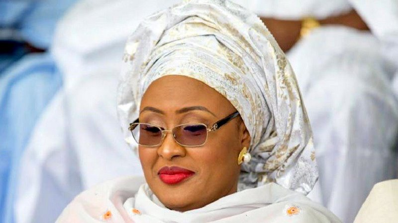

geo political zones in nigeria
south south
-
akwa ibom

- edo
-
rivers

- bayelsa
south west
- lagos
-
osun

- ogun
- oyo
north central
- kwara
-
kogi

-
benue

- nassarawa
south east
-
anambra

- enugu
-
imo

- ebonyi
north west
-
sokoto

-
kano

- kebbi
- katsina
north east
- adamawa 
- borno
- yobe
-
taraba